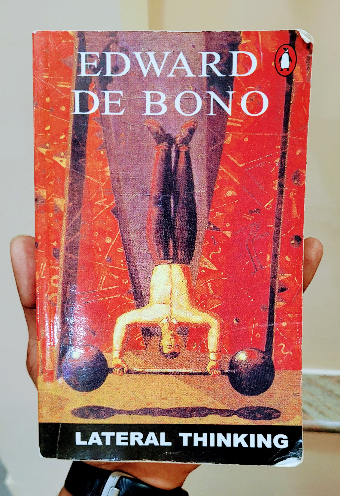

Assumptions impose boundaries for thinking
The Why Technique:
- Asked when one does not know the answer, familiar terms are questioned. Nothing is sacred. Example: Why are blackboards black?
- The attitude is, "This is not going to work, but what does this lead to."
- Critical evaluation is temporarily suspended to develop a generative frame of mind in which flexibility and variety can be used with confidence.
- If one takes any situation and breaks it down into fractions, one can restructure the situation by putting the fractions together in a new way.
- Reverse the situation even though it is ridiculous.
Brainstorming sessions:
> Should be short (30-45 minutes) and resisted from extending.
> There should be no criticism or evaluation.
> Even the most ridiculous ideas can be stated.
Choice of Entry Point:
> Attention settles over the most obvious entry point, so deliberately try to rotate attention over all parts of the problem.
> To restructure a situation, one may need no more than a slight shift in attention. On the other hand, if there is no shift in attention, it may be very difficult to look at the situation in a different way.
Random Simulation:
- With random simulations, one deliberately mixes an unconnected piece of information to disturb the original pattern. Search a dictionary for a random word, then try to relate it with the problem.
Block by Openness:
- It is interesting that we have developed methods for dealing with things which are wrong but no methods for things which are right. We do not explore right further and come to a halt.
Handling Cliche Units:
- Trimming and splitting
- Abstraction and extraction
- Combining
- If a function is decided, then design ideas are very fixed. So think:
· How abstraction of a function can lead to different ways of carrying out the function.
· How one may need to change a particular idea of function in order to generate new approaches.
Design Setting:
1. Generate Alternatives
2. Look beyond for better
3. Remove cliche domination